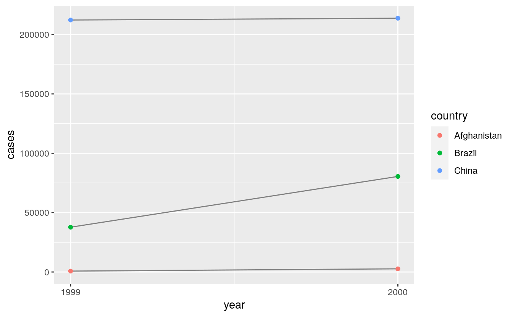
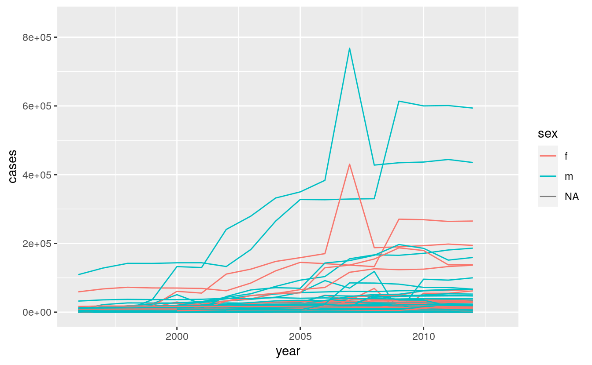

12 Tidy data
This book is superseded.
These are solutions to the 1st edition of R for Data Science . A 2nd edition has since been published, with its own solutions to the exercises .
This site is no longer maintained. It is kept online for reference.
12.1 Introduction
library("tidyverse")
#> Warning: package 'purrr' was built under R version 4.0.512.2 Tidy data
Exercise 12.2.1
Using prose, describe how the variables and observations are organized in each of the sample tables.
In table table1, each row represents a (country, year) combination.
The columns cases and population contain the values for those variables.
table1
#> # A tibble: 6 x 4
#> country year cases population
#> <chr> <int> <int> <int>
#> 1 Afghanistan 1999 745 19987071
#> 2 Afghanistan 2000 2666 20595360
#> 3 Brazil 1999 37737 172006362
#> 4 Brazil 2000 80488 174504898
#> 5 China 1999 212258 1272915272
#> 6 China 2000 213766 1280428583In table2, each row represents a (country, year, variable) combination.
The column count contains the values of variables cases and population in separate rows.
table2
#> # A tibble: 12 x 4
#> country year type count
#> <chr> <int> <chr> <int>
#> 1 Afghanistan 1999 cases 745
#> 2 Afghanistan 1999 population 19987071
#> 3 Afghanistan 2000 cases 2666
#> 4 Afghanistan 2000 population 20595360
#> 5 Brazil 1999 cases 37737
#> 6 Brazil 1999 population 172006362
#> # … with 6 more rowsIn table3, each row represents a (country, year) combination.
The column rate provides the values of both cases and population in a string formatted like cases / population.
table3
#> # A tibble: 6 x 3
#> country year rate
#> * <chr> <int> <chr>
#> 1 Afghanistan 1999 745/19987071
#> 2 Afghanistan 2000 2666/20595360
#> 3 Brazil 1999 37737/172006362
#> 4 Brazil 2000 80488/174504898
#> 5 China 1999 212258/1272915272
#> 6 China 2000 213766/1280428583Table 4 is split into two tables, one table for each variable.
The table table4a contains the values of cases and table4b contains the values of population.
Within each table, each row represents a country, each column represents a year, and the cells are the value of the table’s variable for that country and year.
table4a
#> # A tibble: 3 x 3
#> country `1999` `2000`
#> * <chr> <int> <int>
#> 1 Afghanistan 745 2666
#> 2 Brazil 37737 80488
#> 3 China 212258 213766table4b
#> # A tibble: 3 x 3
#> country `1999` `2000`
#> * <chr> <int> <int>
#> 1 Afghanistan 19987071 20595360
#> 2 Brazil 172006362 174504898
#> 3 China 1272915272 1280428583Exercise 12.2.2
Compute the rate for table2, and table4a + table4b.
You will need to perform four operations:
- Extract the number of TB cases per country per year.
- Extract the matching population per country per year.
- Divide cases by population, and multiply by 10000.
- Store back in the appropriate place.
Which representation is easiest to work with? Which is hardest? Why?
To calculate cases per person, we need to divide cases by population for each country and year. This is easiest if the cases and population variables are two columns in a data frame in which rows represent (country, year) combinations.
Table 2: First, create separate tables for cases and population and ensure that they are sorted in the same order.
t2_cases <- filter(table2, type == "cases") %>%
rename(cases = count) %>%
arrange(country, year)
t2_population <- filter(table2, type == "population") %>%
rename(population = count) %>%
arrange(country, year)Then create a new data frame with the population and cases columns, and calculate the cases per capita in a new column.
t2_cases_per_cap <- tibble(
year = t2_cases$year,
country = t2_cases$country,
cases = t2_cases$cases,
population = t2_population$population
) %>%
mutate(cases_per_cap = (cases / population) * 10000) %>%
select(country, year, cases_per_cap)To store this new variable in the appropriate location, we will add new rows to table2.
t2_cases_per_cap <- t2_cases_per_cap %>%
mutate(type = "cases_per_cap") %>%
rename(count = cases_per_cap)bind_rows(table2, t2_cases_per_cap) %>%
arrange(country, year, type, count)
#> # A tibble: 18 x 4
#> country year type count
#> <chr> <int> <chr> <dbl>
#> 1 Afghanistan 1999 cases 745
#> 2 Afghanistan 1999 cases_per_cap 0.373
#> 3 Afghanistan 1999 population 19987071
#> 4 Afghanistan 2000 cases 2666
#> 5 Afghanistan 2000 cases_per_cap 1.29
#> 6 Afghanistan 2000 population 20595360
#> # … with 12 more rowsNote that after adding the cases_per_cap rows, the type of count is coerced to numeric (double) because cases_per_cap is not an integer.
For table4a and table4b, create a new table for cases per capita, which we’ll name table4c, with country rows and year columns.
table4c <-
tibble(
country = table4a$country,
`1999` = table4a[["1999"]] / table4b[["1999"]] * 10000,
`2000` = table4a[["2000"]] / table4b[["2000"]] * 10000
)
table4c
#> # A tibble: 3 x 3
#> country `1999` `2000`
#> <chr> <dbl> <dbl>
#> 1 Afghanistan 0.373 1.29
#> 2 Brazil 2.19 4.61
#> 3 China 1.67 1.67Neither table is particularly easy to work with.
Since table2 has separate rows for cases and population we needed to generate a table with columns for cases and population where we could
calculate cases per capita.
table4a and table4b split the cases and population variables into different tables which
made it easy to divide cases by population.
However, we had to repeat this calculation for each row.
The ideal format of a data frame to answer this question is one with columns country, year, cases, and population.
Then problem could be answered with a single mutate() call.
Exercise 12.2.3
Recreate the plot showing change in cases over time using table2 instead of table1.
What do you need to do first?
Before creating the plot with change in cases over time, we need to filter table to only include rows representing cases of TB.
table2 %>%
filter(type == "cases") %>%
ggplot(aes(year, count)) +
geom_line(aes(group = country), colour = "grey50") +
geom_point(aes(colour = country)) +
scale_x_continuous(breaks = unique(table2$year)) +
ylab("cases")
12.3 Pivoting
This code is reproduced from the chapter because it is needed by the exercises.
tidy4a <- table4a %>%
pivot_longer(c(`1999`, `2000`), names_to = "year", values_to = "cases")
tidy4b <- table4b %>%
pivot_longer(c(`1999`, `2000`), names_to = "year", values_to = "population")Exercise 12.3.1
Why are pivot_longer() and pivot_wider() not perfectly symmetrical?
Carefully consider the following example:
Carefully consider the following example:
stocks <- tibble(
year = c(2015, 2015, 2016, 2016),
half = c( 1, 2, 1, 2),
return = c(1.88, 0.59, 0.92, 0.17)
)
stocks %>%
pivot_wider(names_from = year, values_from = return) %>%
pivot_longer(`2015`:`2016`, names_to = "year", values_to = "return")
#> # A tibble: 4 x 3
#> half year return
#> <dbl> <chr> <dbl>
#> 1 1 2015 1.88
#> 2 1 2016 0.92
#> 3 2 2015 0.59
#> 4 2 2016 0.17(Hint: look at the variable types and think about column names.)
pivot_longer() has a names_ptype argument, e.g. names_ptype = list(year = double()). What does it do?
The functions pivot_longer() and pivot_wider() are not perfectly symmetrical because column type information is lost when a data frame is converted from wide to long.
The function pivot_longer() stacks multiple columns which may have had multiple data types into a single column with a single data type.
This transformation throws away the individual data types of the original columns.
The function pivot_wider() creates column names from values in column.
These column names will always be treated as character values by pivot_longer() so if the original variable used to create the column names did not have a character data type, then the round-trip will not reproduce the same dataset.
In the provided example, columns have the following data types:
glimpse(stocks)
#> Rows: 4
#> Columns: 3
#> $ year <dbl> 2015, 2015, 2016, 2016
#> $ half <dbl> 1, 2, 1, 2
#> $ return <dbl> 1.88, 0.59, 0.92, 0.17The pivot_wider() expression pivots the table to create a data frame with years as column names, and the values in return as the column values.
stocks %>%
pivot_wider(names_from = year, values_from = return)
#> # A tibble: 2 x 3
#> half `2015` `2016`
#> <dbl> <dbl> <dbl>
#> 1 1 1.88 0.92
#> 2 2 0.59 0.17The pivot_longer() expression unpivots the table, returning it to a tidy data frame with columns for half, year, and return.
stocks %>%
pivot_wider(names_from = year, values_from = return)%>%
pivot_longer(`2015`:`2016`, names_to = "year", values_to = "return")
#> # A tibble: 4 x 3
#> half year return
#> <dbl> <chr> <dbl>
#> 1 1 2015 1.88
#> 2 1 2016 0.92
#> 3 2 2015 0.59
#> 4 2 2016 0.17There is one difference, in the new data frame, year has a data type of character rather than numeric.
The names_to column created from column names by pivot_longer() will be character by default, which is usually a safe assumption, since syntactically valid-column names can only be character values.
The original data types of column which pivot_wider() used to create the column names was not stored, so pivot_longer() has no idea that the column names in this case should be numeric values.
In the current version of tidyr, the names_ptype argument does not convert the year column to a numeric vector, and it will raise an error.
stocks %>%
pivot_wider(names_from = year, values_from = return)%>%
pivot_longer(`2015`:`2016`, names_to = "year", values_to = "return",
names_ptype = list(year = double()))
#> Error: Can't convert <character> to <double>.Instead, use the names_transform argument to pivot_longer(), which provides a function to coerce the column to a different data type.
stocks %>%
pivot_wider(names_from = year, values_from = return)%>%
pivot_longer(`2015`:`2016`, names_to = "year", values_to = "return",
names_transform = list(year = as.numeric))
#> # A tibble: 4 x 3
#> half year return
#> <dbl> <dbl> <dbl>
#> 1 1 2015 1.88
#> 2 1 2016 0.92
#> 3 2 2015 0.59
#> 4 2 2016 0.17Exercise 12.3.2
Why does this code fail?
table4a %>%
pivot_longer(c(1999, 2000), names_to = "year", values_to = "cases")
#> Error: Can't subset columns that don't exist.
#> ✖ Locations 1999 and 2000 don't exist.
#> ℹ There are only 3 columns.The code fails because the column names 1999 and 2000 are not non-syntactic variable names.[^non-syntactic]
When selecting variables from a data frame, tidyverse functions will interpret numbers, like 1999 and 2000, as column numbers.
In this case, pivot_longer() tries to select the 1999th and 2000th column of the data frame.
To select the columns 1999 and 2000, the names must be surrounded in backticks (```) or provided as strings.
table4a %>%
pivot_longer(c(`1999`, `2000`), names_to = "year", values_to = "cases")
#> # A tibble: 6 x 3
#> country year cases
#> <chr> <chr> <int>
#> 1 Afghanistan 1999 745
#> 2 Afghanistan 2000 2666
#> 3 Brazil 1999 37737
#> 4 Brazil 2000 80488
#> 5 China 1999 212258
#> 6 China 2000 213766table4a %>%
pivot_longer(c("1999", "2000"), names_to = "year", values_to = "cases")
#> # A tibble: 6 x 3
#> country year cases
#> <chr> <chr> <int>
#> 1 Afghanistan 1999 745
#> 2 Afghanistan 2000 2666
#> 3 Brazil 1999 37737
#> 4 Brazil 2000 80488
#> 5 China 1999 212258
#> 6 China 2000 213766Exercise 12.3.3
What would happen if you widen this table? Why? How could you add a new column to uniquely identify each value?
people <- tribble(
~name, ~key, ~value,
#-----------------|--------|------
"Phillip Woods", "age", 45,
"Phillip Woods", "height", 186,
"Phillip Woods", "age", 50,
"Jessica Cordero", "age", 37,
"Jessica Cordero", "height", 156
)
glimpse(people)
#> Rows: 5
#> Columns: 3
#> $ name <chr> "Phillip Woods", "Phillip Woods", "Phillip Woods", "Jessica Cor…
#> $ key <chr> "age", "height", "age", "age", "height"
#> $ value <dbl> 45, 186, 50, 37, 156Widening this data frame using pivot_wider() produces columns that are lists of numeric vectors because the name and key columns do not uniquely identify rows.
In particular, there are two rows with values for the age of “Phillip Woods.”
pivot_wider(people, names_from="name", values_from = "value")
#> Warning: Values are not uniquely identified; output will contain list-cols.
#> * Use `values_fn = list` to suppress this warning.
#> * Use `values_fn = length` to identify where the duplicates arise
#> * Use `values_fn = {summary_fun}` to summarise duplicates
#> # A tibble: 2 x 3
#> key `Phillip Woods` `Jessica Cordero`
#> <chr> <list> <list>
#> 1 age <dbl [2]> <dbl [1]>
#> 2 height <dbl [1]> <dbl [1]>We could solve the problem by adding a row with a distinct observation count for each combination of name and key.
people2 <- people %>%
group_by(name, key) %>%
mutate(obs = row_number())
people2
#> # A tibble: 5 x 4
#> # Groups: name, key [4]
#> name key value obs
#> <chr> <chr> <dbl> <int>
#> 1 Phillip Woods age 45 1
#> 2 Phillip Woods height 186 1
#> 3 Phillip Woods age 50 2
#> 4 Jessica Cordero age 37 1
#> 5 Jessica Cordero height 156 1We can make people2 wider because the combination of name and obs will uniquely identify the rows in the wide data frame.
pivot_wider(people2, names_from="name", values_from = "value")
#> # A tibble: 3 x 4
#> # Groups: key [2]
#> key obs `Phillip Woods` `Jessica Cordero`
#> <chr> <int> <dbl> <dbl>
#> 1 age 1 45 37
#> 2 height 1 186 156
#> 3 age 2 50 NAAnother way to solve this problem is by keeping only distinct rows of the name and key values, and dropping duplicate rows.
people %>%
distinct(name, key, .keep_all = TRUE) %>%
pivot_wider(names_from="name", values_from = "value")
#> # A tibble: 2 x 3
#> key `Phillip Woods` `Jessica Cordero`
#> <chr> <dbl> <dbl>
#> 1 age 45 37
#> 2 height 186 156However, before doing this understand why there are duplicates in the data. The duplicate values may not be just a nuisance, but may indicate deeper problems with the data.
Exercise 12.3.4
Tidy the simple tibble below. Do you need to make it wider or longer? What are the variables?
preg <- tribble(
~pregnant, ~male, ~female,
"yes", NA, 10,
"no", 20, 12
)To tidy the preg table use pivot_longer() to create a long table.
The variables in this data are:
sex(“female,” “male”)pregnant(“yes,” “no”)count, which is a non-negative integer representing the number of observations.
The observations in this data are unique combinations of sex and pregnancy status.
preg_tidy <- preg %>%
pivot_longer(c(male, female), names_to = "sex", values_to = "count")
preg_tidy
#> # A tibble: 4 x 3
#> pregnant sex count
#> <chr> <chr> <dbl>
#> 1 yes male NA
#> 2 yes female 10
#> 3 no male 20
#> 4 no female 12Remove the (male, pregnant) row with a missing value to simplify the tidied data frame.
preg_tidy2 <- preg %>%
pivot_longer(c(male, female), names_to = "sex", values_to = "count", values_drop_na = TRUE)
preg_tidy2
#> # A tibble: 3 x 3
#> pregnant sex count
#> <chr> <chr> <dbl>
#> 1 yes female 10
#> 2 no male 20
#> 3 no female 12This an example of turning an explicit missing value into an implicit missing value, which is discussed in the upcoming section, Missing Values section.
The missing (male, pregnant) row represents an implicit missing value because the value of count can be inferred from its absence.
In the tidy data, we can represent rows with missing values of count either explicitly with an NA (as in preg_tidy) or implicitly by the absence of a row (as in preg_tidy2).
But in the wide data, the missing values can only be represented explicitly.
Though we have already done enough to make the data tidy, there are some other transformations that can clean the data further.
If a variable takes two values, like pregnant and sex, it is often preferable to store them as logical vectors.
preg_tidy3 <- preg_tidy2 %>%
mutate(
female = sex == "female",
pregnant = pregnant == "yes"
) %>%
select(female, pregnant, count)
preg_tidy3
#> # A tibble: 3 x 3
#> female pregnant count
#> <lgl> <lgl> <dbl>
#> 1 TRUE TRUE 10
#> 2 FALSE FALSE 20
#> 3 TRUE FALSE 12In the previous data frame, I named the logical variable representing the sex female, not sex.
This makes the meaning of the variable self-documenting.
If the variable were named sex with values TRUE and FALSE, without reading the documentation, we wouldn’t know whether TRUE means male or female.
Apart from some minor memory savings, representing these variables as logical vectors results in more clear and concise code.
Compare the filter() calls to select non-pregnant females from preg_tidy2 and preg_tidy.
filter(preg_tidy2, sex == "female", pregnant == "no")
#> # A tibble: 1 x 3
#> pregnant sex count
#> <chr> <chr> <dbl>
#> 1 no female 12
filter(preg_tidy3, female, !pregnant)
#> # A tibble: 1 x 3
#> female pregnant count
#> <lgl> <lgl> <dbl>
#> 1 TRUE FALSE 1212.4 Separating and uniting
Exercise 12.4.1
What do the extra and fill arguments do in separate()?
Experiment with the various options for the following two toy datasets.
tibble(x = c("a,b,c", "d,e,f,g", "h,i,j")) %>%
separate(x, c("one", "two", "three"))
#> Warning: Expected 3 pieces. Additional pieces discarded in 1 rows [2].
#> # A tibble: 3 x 3
#> one two three
#> <chr> <chr> <chr>
#> 1 a b c
#> 2 d e f
#> 3 h i j
tibble(x = c("a,b,c", "d,e", "f,g,i")) %>%
separate(x, c("one", "two", "three"))
#> Warning: Expected 3 pieces. Missing pieces filled with `NA` in 1 rows [2].
#> # A tibble: 3 x 3
#> one two three
#> <chr> <chr> <chr>
#> 1 a b c
#> 2 d e <NA>
#> 3 f g iThe extra argument tells separate() what to do if there are too many pieces, and the fill argument tells it what to do if there aren’t enough.
By default, separate() drops extra values with a warning.
tibble(x = c("a,b,c", "d,e,f,g", "h,i,j")) %>%
separate(x, c("one", "two", "three"))
#> Warning: Expected 3 pieces. Additional pieces discarded in 1 rows [2].
#> # A tibble: 3 x 3
#> one two three
#> <chr> <chr> <chr>
#> 1 a b c
#> 2 d e f
#> 3 h i jAdding the argument, extra = "drop", produces the same result as above but without the warning.
tibble(x = c("a,b,c", "d,e,f,g", "h,i,j")) %>%
separate(x, c("one", "two", "three"), extra = "drop")
#> # A tibble: 3 x 3
#> one two three
#> <chr> <chr> <chr>
#> 1 a b c
#> 2 d e f
#> 3 h i jSetting extra = "merge", then the extra values are not split, so "f,g" appears in column three.
tibble(x = c("a,b,c", "d,e,f,g", "h,i,j")) %>%
separate(x, c("one", "two", "three"), extra = "merge")
#> # A tibble: 3 x 3
#> one two three
#> <chr> <chr> <chr>
#> 1 a b c
#> 2 d e f,g
#> 3 h i jIn this example, one of the values, "d,e", has too few elements.
The default for fill is similar to those in separate();
it fills columns with missing values but emits a warning.
In this example, the 2nd row of column three is NA.
tibble(x = c("a,b,c", "d,e", "f,g,i")) %>%
separate(x, c("one", "two", "three"))
#> Warning: Expected 3 pieces. Missing pieces filled with `NA` in 1 rows [2].
#> # A tibble: 3 x 3
#> one two three
#> <chr> <chr> <chr>
#> 1 a b c
#> 2 d e <NA>
#> 3 f g iAlternative options for the fill are "right", to fill with missing values from the right, but without a warning
tibble(x = c("a,b,c", "d,e", "f,g,i")) %>%
separate(x, c("one", "two", "three"), fill = "right")
#> # A tibble: 3 x 3
#> one two three
#> <chr> <chr> <chr>
#> 1 a b c
#> 2 d e <NA>
#> 3 f g iThe option fill = "left" also fills with missing values without emitting a warning, but this time from the left side.
Now, the 2nd row of column one will be missing, and the other values in that row are shifted right.
tibble(x = c("a,b,c", "d,e", "f,g,i")) %>%
separate(x, c("one", "two", "three"), fill = "left")
#> # A tibble: 3 x 3
#> one two three
#> <chr> <chr> <chr>
#> 1 a b c
#> 2 <NA> d e
#> 3 f g iExercise 12.4.2
Both unite() and separate() have a remove argument.
What does it do?
Why would you set it to FALSE?
The remove argument discards input columns in the result data frame. You would set it to FALSE if you want to create a new variable, but keep the old one.
Exercise 12.4.3
Compare and contrast separate() and extract(), Why are there three variations of separation (by position, by separator, and with groups), but only one unite?
The function separate(), splits a column into multiple columns by separator, if the sep argument is a character vector, or by character positions, if sep is numeric.
# example with separators
tibble(x = c("X_1", "X_2", "AA_1", "AA_2")) %>%
separate(x, c("variable", "into"), sep = "_")
#> # A tibble: 4 x 2
#> variable into
#> <chr> <chr>
#> 1 X 1
#> 2 X 2
#> 3 AA 1
#> 4 AA 2
# example with position
tibble(x = c("X1", "X2", "Y1", "Y2")) %>%
separate(x, c("variable", "into"), sep = c(1))
#> # A tibble: 4 x 2
#> variable into
#> <chr> <chr>
#> 1 X 1
#> 2 X 2
#> 3 Y 1
#> 4 Y 2The function extract() uses a regular expression to specify groups in character vector and split that single character vector into multiple columns.
This is more flexible than separate() because it does not require a common
separator or specific column positions.
# example with separators
tibble(x = c("X_1", "X_2", "AA_1", "AA_2")) %>%
extract(x, c("variable", "id"), regex = "([A-Z])_([0-9])")
#> # A tibble: 4 x 2
#> variable id
#> <chr> <chr>
#> 1 X 1
#> 2 X 2
#> 3 A 1
#> 4 A 2
# example with position
tibble(x = c("X1", "X2", "Y1", "Y2")) %>%
extract(x, c("variable", "id"), regex = "([A-Z])([0-9])")
#> # A tibble: 4 x 2
#> variable id
#> <chr> <chr>
#> 1 X 1
#> 2 X 2
#> 3 Y 1
#> 4 Y 2
# example that separate could not parse
tibble(x = c("X1", "X20", "AA11", "AA2")) %>%
extract(x, c("variable", "id"), regex = "([A-Z]+)([0-9]+)")
#> # A tibble: 4 x 2
#> variable id
#> <chr> <chr>
#> 1 X 1
#> 2 X 20
#> 3 AA 11
#> 4 AA 2Both separate() and extract() convert a single column to many columns.
However, unite() converts many columns to one, with a choice of a separator to include between column values.
tibble(variable = c("X", "X", "Y", "Y"), id = c(1, 2, 1, 2)) %>%
unite(x, variable, id, sep = "_")
#> # A tibble: 4 x 1
#> x
#> <chr>
#> 1 X_1
#> 2 X_2
#> 3 Y_1
#> 4 Y_2In other words, with extract() and separate() only one column can be chosen,
but there are many choices how to split that single column into different columns.
With unite(), there are many choices as to which columns to include, but only one
choice as to how to combine their contents into a single vector.
12.5 Missing values
Exercise 12.5.1
Compare and contrast the fill arguments to pivot_wider() and complete().
The values_fill argument in pivot_wider() and the fill argument to complete() both set vales to replace NA.
Both arguments accept named lists to set values for each column.
Additionally, the values_fill argument of pivot_wider() accepts a single value.
In complete(), the fill argument also sets a value to replace NAs but it is named list, allowing for different values for different variables.
Also, both cases replace both implicit and explicit missing values.
For example, this will fill in the missing values of the long data frame with 0 complete():
stocks <- tibble(
year = c(2015, 2015, 2015, 2015, 2016, 2016, 2016),
qtr = c( 1, 2, 3, 4, 2, 3, 4),
return = c(1.88, 0.59, 0.35, NA, 0.92, 0.17, 2.66)
)
stocks %>%
pivot_wider(names_from = year, values_from = return,
values_fill = 0)
#> # A tibble: 4 x 3
#> qtr `2015` `2016`
#> <dbl> <dbl> <dbl>
#> 1 1 1.88 0
#> 2 2 0.59 0.92
#> 3 3 0.35 0.17
#> 4 4 NA 2.66stocks <- tibble(
year = c(2015, 2015, 2015, 2015, 2016, 2016, 2016),
qtr = c( 1, 2, 3, 4, 2, 3, 4),
return = c(1.88, 0.59, 0.35, NA, 0.92, 0.17, 2.66)
)
stocks %>%
pivot_wider(names_from = year, values_from = return,
values_fill = 0)
#> # A tibble: 4 x 3
#> qtr `2015` `2016`
#> <dbl> <dbl> <dbl>
#> 1 1 1.88 0
#> 2 2 0.59 0.92
#> 3 3 0.35 0.17
#> 4 4 NA 2.66For example, this will fill in the missing values of the long data frame with 0 complete():
stocks %>%
complete(year, qtr, fill=list(return=0))
#> # A tibble: 8 x 3
#> year qtr return
#> <dbl> <dbl> <dbl>
#> 1 2015 1 1.88
#> 2 2015 2 0.59
#> 3 2015 3 0.35
#> 4 2015 4 0
#> 5 2016 1 0
#> 6 2016 2 0.92
#> # … with 2 more rowsExercise 12.5.2
What does the direction argument to fill() do?
With fill, the direction determines whether NA values should be replaced by the previous non-missing value ("down") or the next non-missing value ("up").
12.6 Case Study
This code is repeated from the chapter because it is needed by the exercises.
who1 <- who %>%
pivot_longer(
cols = new_sp_m014:newrel_f65,
names_to = "key",
values_to = "cases",
values_drop_na = TRUE
)
who1
#> # A tibble: 76,046 x 6
#> country iso2 iso3 year key cases
#> <chr> <chr> <chr> <int> <chr> <int>
#> 1 Afghanistan AF AFG 1997 new_sp_m014 0
#> 2 Afghanistan AF AFG 1997 new_sp_m1524 10
#> 3 Afghanistan AF AFG 1997 new_sp_m2534 6
#> 4 Afghanistan AF AFG 1997 new_sp_m3544 3
#> 5 Afghanistan AF AFG 1997 new_sp_m4554 5
#> 6 Afghanistan AF AFG 1997 new_sp_m5564 2
#> # … with 76,040 more rowswho2 <- who1 %>%
mutate(names_from = stringr::str_replace(key, "newrel", "new_rel"))
who2
#> # A tibble: 76,046 x 7
#> country iso2 iso3 year key cases names_from
#> <chr> <chr> <chr> <int> <chr> <int> <chr>
#> 1 Afghanistan AF AFG 1997 new_sp_m014 0 new_sp_m014
#> 2 Afghanistan AF AFG 1997 new_sp_m1524 10 new_sp_m1524
#> 3 Afghanistan AF AFG 1997 new_sp_m2534 6 new_sp_m2534
#> 4 Afghanistan AF AFG 1997 new_sp_m3544 3 new_sp_m3544
#> 5 Afghanistan AF AFG 1997 new_sp_m4554 5 new_sp_m4554
#> 6 Afghanistan AF AFG 1997 new_sp_m5564 2 new_sp_m5564
#> # … with 76,040 more rowswho3 <- who2 %>%
separate(key, c("new", "type", "sexage"), sep = "_")
#> Warning: Expected 3 pieces. Missing pieces filled with `NA` in 2580 rows [243,
#> 244, 679, 680, 681, 682, 683, 684, 685, 686, 687, 688, 689, 690, 691, 692, 903,
#> 904, 905, 906, ...].
who3
#> # A tibble: 76,046 x 9
#> country iso2 iso3 year new type sexage cases names_from
#> <chr> <chr> <chr> <int> <chr> <chr> <chr> <int> <chr>
#> 1 Afghanistan AF AFG 1997 new sp m014 0 new_sp_m014
#> 2 Afghanistan AF AFG 1997 new sp m1524 10 new_sp_m1524
#> 3 Afghanistan AF AFG 1997 new sp m2534 6 new_sp_m2534
#> 4 Afghanistan AF AFG 1997 new sp m3544 3 new_sp_m3544
#> 5 Afghanistan AF AFG 1997 new sp m4554 5 new_sp_m4554
#> 6 Afghanistan AF AFG 1997 new sp m5564 2 new_sp_m5564
#> # … with 76,040 more rowswho3 %>%
count(new)
#> # A tibble: 2 x 2
#> new n
#> * <chr> <int>
#> 1 new 73466
#> 2 newrel 2580who4 <- who3 %>%
select(-new, -iso2, -iso3)who5 <- who4 %>%
separate(sexage, c("sex", "age"), sep = 1)
who5
#> # A tibble: 76,046 x 7
#> country year type sex age cases names_from
#> <chr> <int> <chr> <chr> <chr> <int> <chr>
#> 1 Afghanistan 1997 sp m 014 0 new_sp_m014
#> 2 Afghanistan 1997 sp m 1524 10 new_sp_m1524
#> 3 Afghanistan 1997 sp m 2534 6 new_sp_m2534
#> 4 Afghanistan 1997 sp m 3544 3 new_sp_m3544
#> 5 Afghanistan 1997 sp m 4554 5 new_sp_m4554
#> 6 Afghanistan 1997 sp m 5564 2 new_sp_m5564
#> # … with 76,040 more rowsExercise 12.6.1
In this case study, I set na.rm = TRUE just to make it easier to check that we had the correct values.
Is this reasonable?
Think about how missing values are represented in this dataset.
Are there implicit missing values?
What’s the difference between an NA and zero?
The reasonableness of using na.rm = TRUE depends on how missing values are represented in this dataset.
The main concern is whether a missing value means that there were no cases of TB or whether it means that the WHO does not have data on the number of TB cases.
Here are some things we should look for to help distinguish between these cases.
If there are no 0 values in the data, then missing values may be used to indicate no cases.
If there are both explicit and implicit missing values, then it suggests that missing values are being used differently. In that case, it is likely that explicit missing values would mean no cases, and implicit missing values would mean no data on the number of cases.
First, I’ll check for the presence of zeros in the data.
who1 %>%
filter(cases == 0) %>%
nrow()
#> [1] 11080There are zeros in the data, so it appears that cases of zero TB are explicitly indicated, and the value ofNA is used to indicate missing data.
Second, I should check whether all values for a (country, year) are missing or whether it is possible for only some columns to be missing.
pivot_longer(who, c(new_sp_m014:newrel_f65), names_to = "key", values_to = "cases") %>%
group_by(country, year) %>%
mutate(prop_missing = sum(is.na(cases)) / n()) %>%
filter(prop_missing > 0, prop_missing < 1)
#> # A tibble: 195,104 x 7
#> # Groups: country, year [3,484]
#> country iso2 iso3 year key cases prop_missing
#> <chr> <chr> <chr> <int> <chr> <int> <dbl>
#> 1 Afghanistan AF AFG 1997 new_sp_m014 0 0.75
#> 2 Afghanistan AF AFG 1997 new_sp_m1524 10 0.75
#> 3 Afghanistan AF AFG 1997 new_sp_m2534 6 0.75
#> 4 Afghanistan AF AFG 1997 new_sp_m3544 3 0.75
#> 5 Afghanistan AF AFG 1997 new_sp_m4554 5 0.75
#> 6 Afghanistan AF AFG 1997 new_sp_m5564 2 0.75
#> # … with 195,098 more rowsFrom the results above, it looks like it is possible for a (country, year) row to contain some, but not all, missing values in its columns.
Finally, I will check for implicit missing values.
Implicit missing values are (year, country) combinations that do not appear in the data.
nrow(who)
#> [1] 7240
who %>%
complete(country, year) %>%
nrow()
#> [1] 7446Since the number of complete cases of (country, year) is greater than the number of rows in who, there are some implicit values.
But that doesn’t tell us what those implicit missing values are.
To do this, I will use the anti_join() function introduced in the later Relational Data chapter.
anti_join(complete(who, country, year), who, by = c("country", "year")) %>%
select(country, year) %>%
group_by(country) %>%
# so I can make better sense of the years
summarise(min_year = min(year), max_year = max(year))
#> # A tibble: 9 x 3
#> country min_year max_year
#> * <chr> <int> <int>
#> 1 Bonaire, Saint Eustatius and Saba 1980 2009
#> 2 Curacao 1980 2009
#> 3 Montenegro 1980 2004
#> 4 Netherlands Antilles 2010 2013
#> 5 Serbia 1980 2004
#> 6 Serbia & Montenegro 2005 2013
#> # … with 3 more rowsAll of these refer to (country, year) combinations for years prior to the existence of the country.
For example, Timor-Leste achieved independence in 2002, so years prior to that are not included in the data.
To summarize:
0is used to represent no cases of TB.- Explicit missing values (
NAs) are used to represent missing data for (country,year) combinations in which the country existed in that year. - Implicit missing values are used to represent missing data because a country did not exist in that year.
Exercise 12.6.2
What happens if you neglect the mutate() step?
(mutate(key = str_replace(key, "newrel", "new_rel"))
The separate() function emits the warning “too few values.”
If we check the rows for keys beginning with "newrel_", we see that sexage is missing,
and type = m014.
who3a <- who1 %>%
separate(key, c("new", "type", "sexage"), sep = "_")
#> Warning: Expected 3 pieces. Missing pieces filled with `NA` in 2580 rows [243,
#> 244, 679, 680, 681, 682, 683, 684, 685, 686, 687, 688, 689, 690, 691, 692, 903,
#> 904, 905, 906, ...].
filter(who3a, new == "newrel") %>% head()
#> # A tibble: 6 x 8
#> country iso2 iso3 year new type sexage cases
#> <chr> <chr> <chr> <int> <chr> <chr> <chr> <int>
#> 1 Afghanistan AF AFG 2013 newrel m014 <NA> 1705
#> 2 Afghanistan AF AFG 2013 newrel f014 <NA> 1749
#> 3 Albania AL ALB 2013 newrel m014 <NA> 14
#> 4 Albania AL ALB 2013 newrel m1524 <NA> 60
#> 5 Albania AL ALB 2013 newrel m2534 <NA> 61
#> 6 Albania AL ALB 2013 newrel m3544 <NA> 32Exercise 12.6.3
I claimed that iso2 and iso3 were redundant with country.
Confirm this claim.
If iso2 and iso3 are redundant with country, then, within each country,
there should only be one distinct combination of iso2 and iso3 values, which is the case.
select(who3, country, iso2, iso3) %>%
distinct() %>%
group_by(country) %>%
filter(n() > 1)
#> # A tibble: 0 x 3
#> # Groups: country [0]
#> # … with 3 variables: country <chr>, iso2 <chr>, iso3 <chr>This makes sense, since iso2 and iso3 contain the 2- and 3-letter country abbreviations for the country.
The iso2 variable contains each country’s ISO 3166 alpha-2, and the iso3 variable contains each country’s ISO 3166 alpha-3 abbreviation.
You may recognize the ISO 3166-2 abbreviations, since they are almost identical to internet country-code top level domains, such as .uk (United Kingdom), .ly (Libya), .tv (Tuvalu), and .io (British Indian Ocean Territory).
Exercise 12.6.4
For each country, year, and sex compute the total number of cases of TB. Make an informative visualization of the data.
who5 %>%
group_by(country, year, sex) %>%
filter(year > 1995) %>%
summarise(cases = sum(cases)) %>%
unite(country_sex, country, sex, remove = FALSE) %>%
ggplot(aes(x = year, y = cases, group = country_sex, colour = sex)) +
geom_line()
#> `summarise()` has grouped output by 'country', 'year'. You can override using the `.groups` argument.
A small multiples plot faceting by country is difficult given the number of countries. Focusing on those countries with the largest changes or absolute magnitudes after providing the context above is another option.
12.7 Non-tidy data
[ex-12.2.2]: It would be better to join these tables using the methods covered in the Relational Data.
We could use inner_join(t2_cases, t2_population, by = c("country", "year")).
[non-syntactic]: See the Creating Tibbles section.